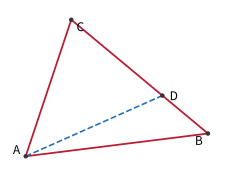
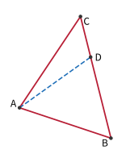
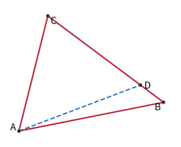

別冊練習問題 10 の解答 頂点を通る直線で面積を分ける
(1) \(A(1,1),\ B(9,2),\ C(3,7)\) を頂点とする三角形の面積を、頂点 \(A\) を通る直線で \(1:2\) に分けたい。その直線の方程式を求めよ。
面積比は底辺の比
頂点 \(A\) を通る直線が \(BC\) と交わる点を \(D\) とすると、高さが共通なので \(\triangle ABD:\triangle ADC=BD:DC\)。

D を求める
\(BD:DC=1:2\) だから \(D\) は \(BC\) を \(1:2\) に内分。
\[D\left(7,\ \dfrac{11}{3}\right)\]直線 AD
\[y=\dfrac{4}{9}(x-1)+1\]【答案】
\[y=\dfrac{4 x}{9} + \dfrac{5}{9}\]答
(2) \(A(0,2),\ B(6,0),\ C(4,8)\) を頂点とする三角形の面積を、頂点 \(A\) を通る直線で \(2:1\) に分けたい。その直線の方程式を求めよ。
面積比は底辺の比
頂点 \(A\) を通る直線が \(BC\) と交わる点を \(D\) とすると、高さが共通なので \(\triangle ABD:\triangle ADC=BD:DC\)。

D を求める
\(BD:DC=2:1\) だから \(D\) は \(BC\) を \(2:1\) に内分。
\[D\left(\dfrac{14}{3},\ \dfrac{16}{3}\right)\]直線 AD
\[y=\dfrac{5}{7}x+2\]【答案】
\[y=\dfrac{5 x}{7} + 2\]答
(3) \(A(0,0),\ B(10,2),\ C(2,8)\) を頂点とする三角形の面積を、頂点 \(A\) を通る直線で \(1:4\) に分けたい。その直線の方程式を求めよ。
面積比は底辺の比
頂点 \(A\) を通る直線が \(BC\) と交わる点を \(D\) とすると、高さが共通なので \(\triangle ABD:\triangle ADC=BD:DC\)。

D を求める
\(BD:DC=1:4\) だから \(D\) は \(BC\) を \(1:4\) に内分。
\[D\left(\dfrac{42}{5},\ \dfrac{16}{5}\right)\]直線 AD
\[y=\dfrac{8}{21}x+0\]【答案】
\[y=\dfrac{8 x}{21}\]答